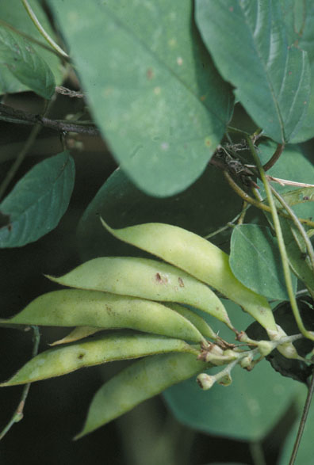
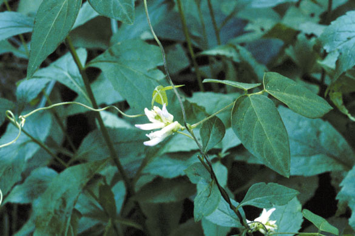

Amphicarpaea Bracteata
Family: Fabaceae
Upland Hog Peanut
Swink/Wilhelm #5


FLOWERING: Early August to mid-September
SEED TIMING: Mid-August to October
HABITAT: Open wooded slopes and floodplains, usually where soils are rich and there has been some disturbance
DIAGNOSTIC FEATURES: A delicate, twining vine with tendrils. Oval, pointed, light-green leaflets in triplets. Short, drooping clusters of pea-like white flowers tinged in pale pink or violet in the long leaf axils. Forms in colonies, and can be found twining around adjacent plants and shrubs.
TO PICK: Small, curved pods form in leaf axils containing 3 to 4 mottled bean-like seeds. Pods look slightly dried up when ripe.